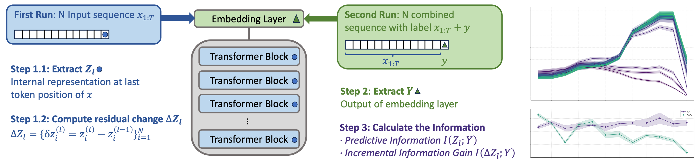

I’m a second-year CS Ph.D. student at
Rice University,
advised by Prof.
Hanjie Chen.
I’m interested in interpretable machine learning—especially understanding how language models behave and process information to make decisions.
Before Rice, I earned my master’s at
Carnegie Mellon University.
🔍 Models aren’t just monotonically better deeper, they show a ridge of generalization in intermidiate layers.
✂️ InfoRidge is an information-theoretic lens to trace how predictive information flows across depth.
Predictive information peaks in upper-middle layers (the “ridge”) then drops in final layers.
Residual scaling probes show that under distribution shift, models downweight deep layers and rely more on ridge layers.

InfoRidge identifies the generalization ridge — a intermidiate-layer peak in predictive information.
🔄 Reasoning in LLMs unfolds across both explicit steps in text and implicit shifts in hidden states.
🏛️ Our Hierarchical Hidden Markov Model (HHMM) links these two views, modeling reasoning as trajectories through semantic roles and structural depth regimes.